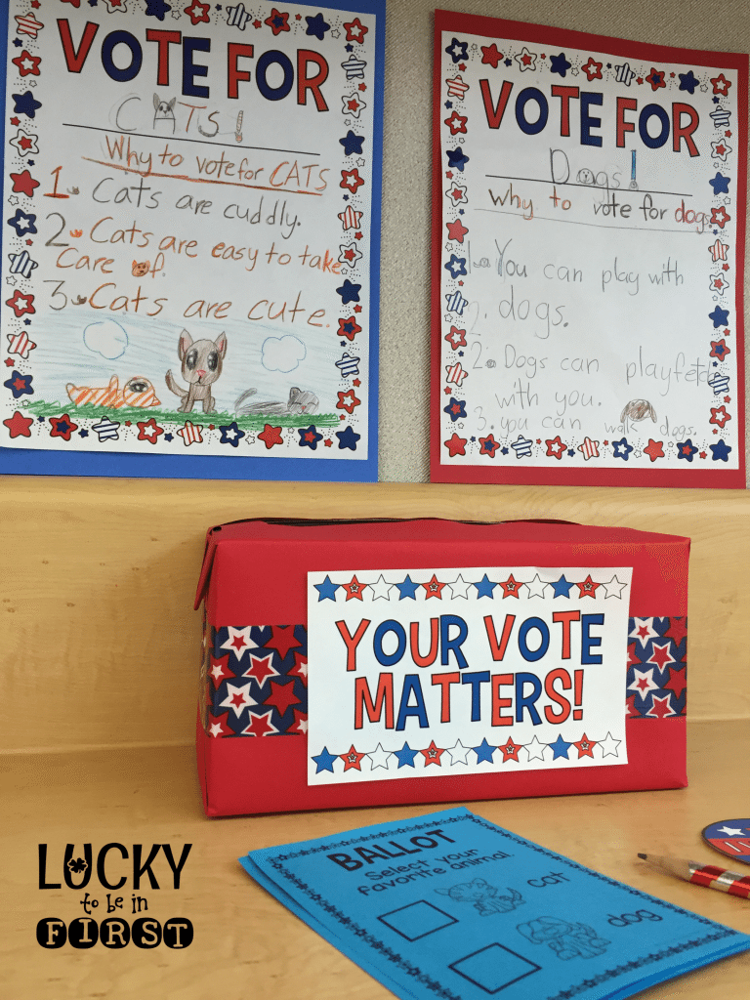

Election in University
A student learns a lot other than academics in his/her college life rather that is the best time to add to one's life experience. For a student , extra curriculum activities in University play a major role in his/her overall growth and that is the best time to enrich read more...